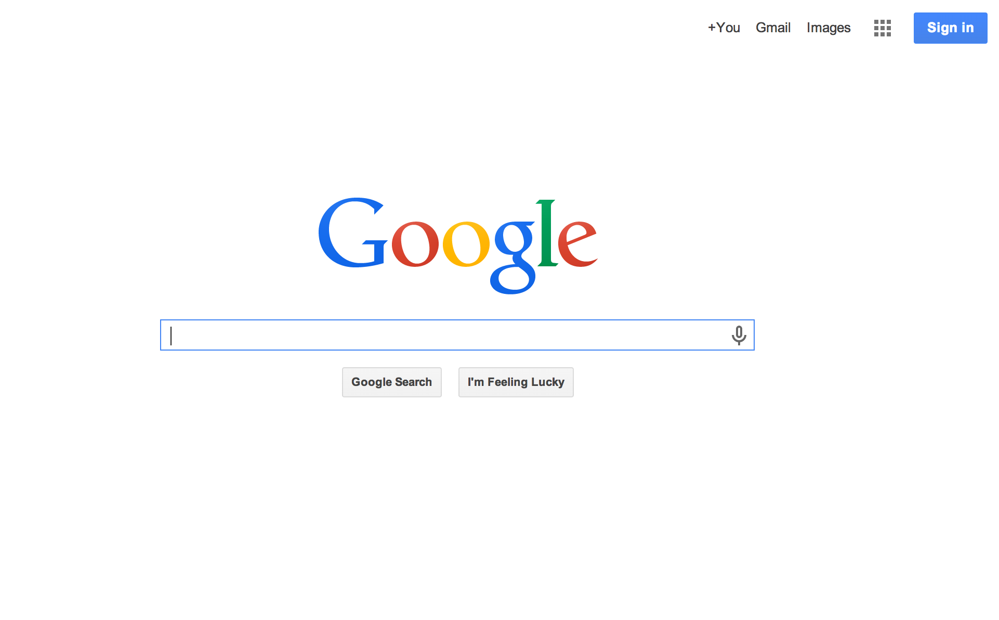

Three of My Favorite Sites
Posted on 7 Jun 2014 by Kyle Daugherty
Google is hands down the one site I use most often. It is simple and clean. It is that simplicity which allows users to focus on their searching and not be distracted by headlines, trends, etc. (like with Yahoo!) The home page primarily consists of a search field and button. On other pages (e.g., search results), Google does show ads, but it is not overly cluttered. This makes it very easy to find what you are looking for.
Google wouldn't be much of a search engine if it was not functional and relevant. Clearly, they have mastered this craft. The predictive searching is like they are pulling ninja mind tricks and reading your thoughts. They do an incredible job of understanding the context of your searches to provide the most relevant information to you.
One of my only critiques I've noticed would be when you search for restaurants. On the results page, it shows a scrolling list of the restaurants near you, but the dark background of this section does not fit with the overall theme in my opinion. I think they should make the area much lighter.
